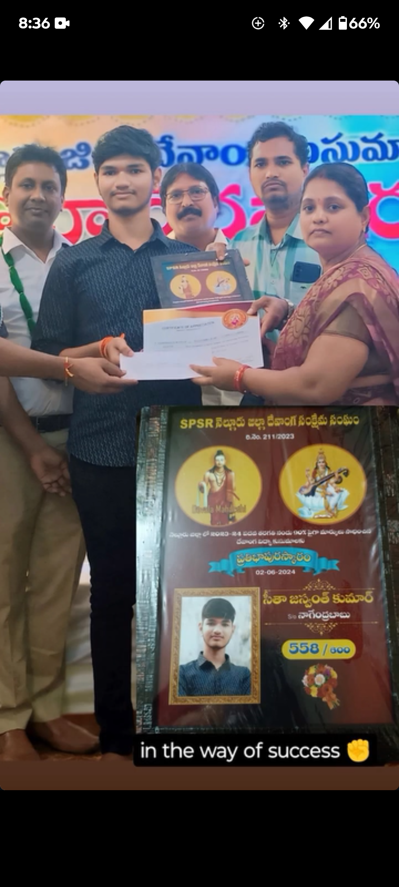
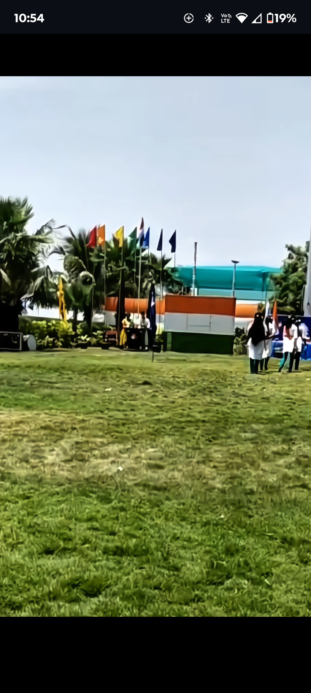
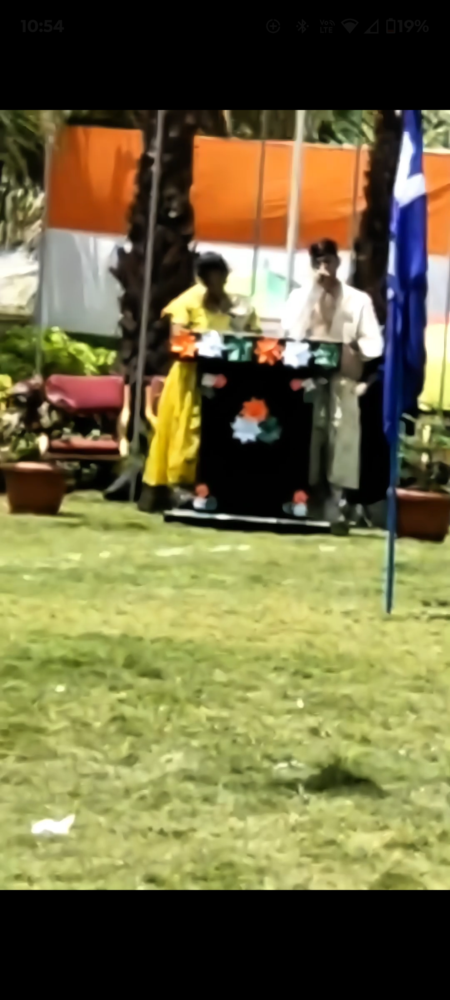
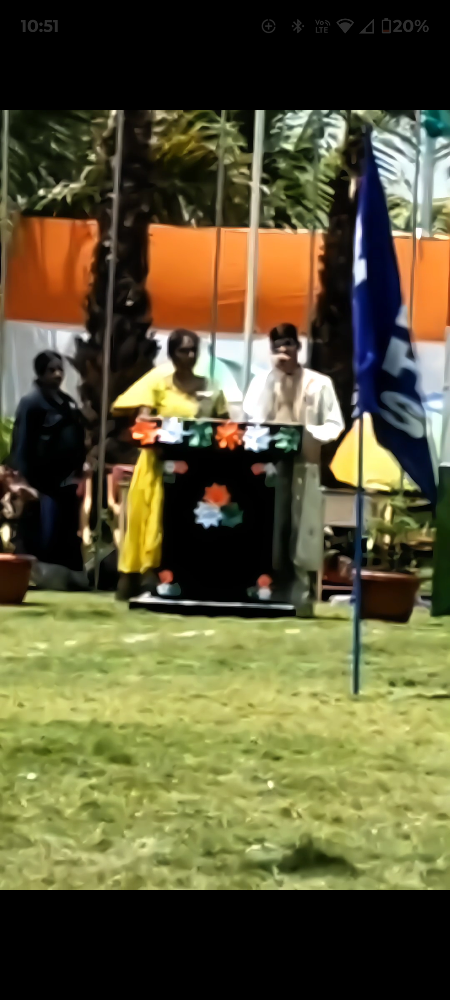
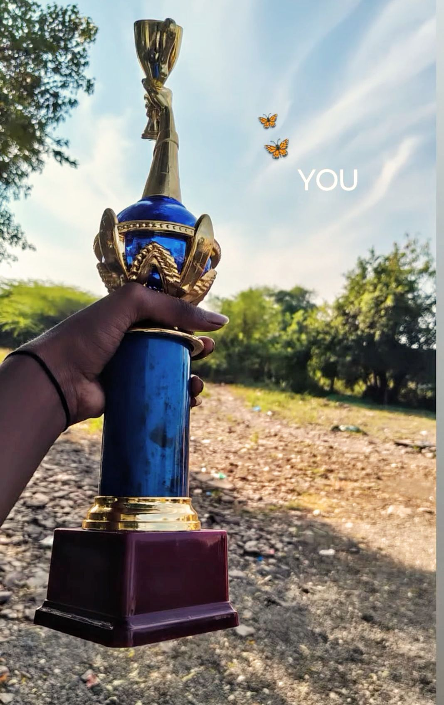
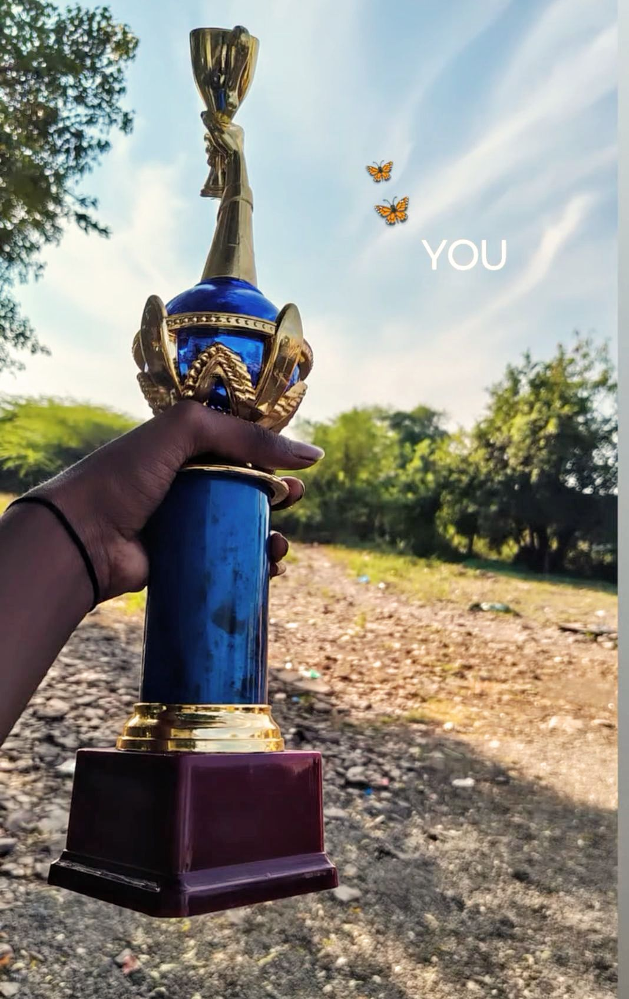
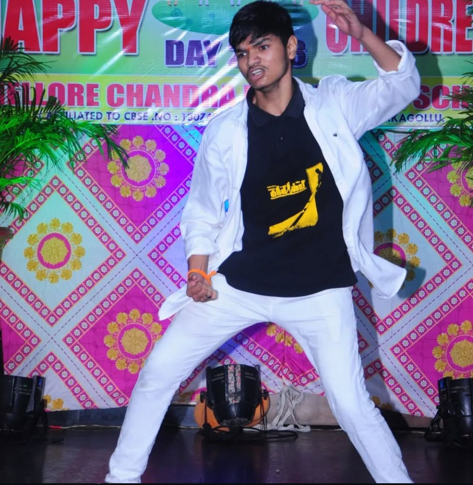
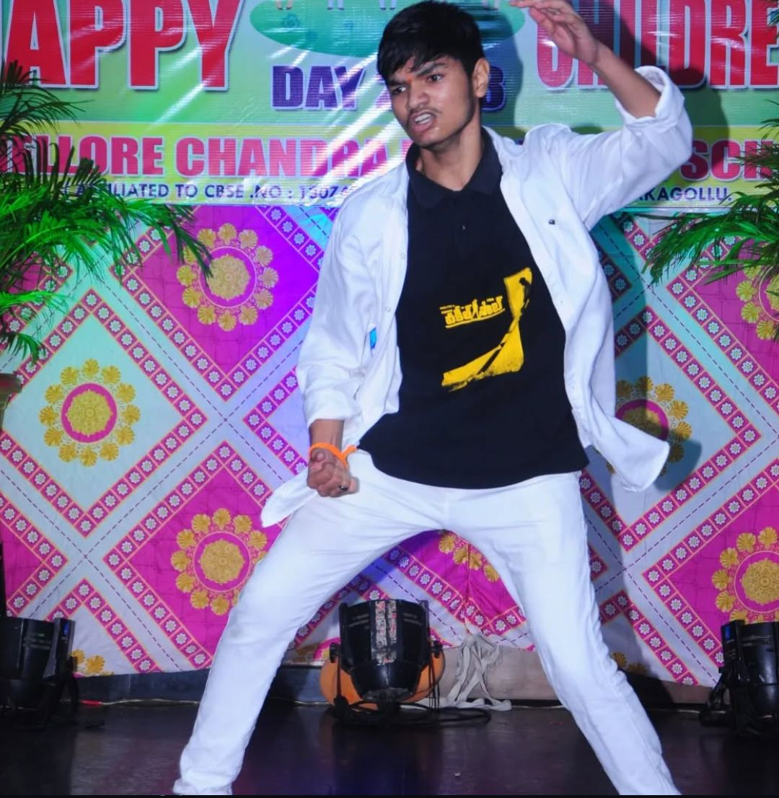

Achievements & Activities
🏆 Academic Certificates
Awarded for academic excellence and outstanding performance in school-level examinations.


🎤 Anchoring
Actively participated as an anchor in academic and cultural events, demonstrating strong communication skills, stage confidence, and leadership.
  ▶ Watch anchoring video on YouTube
🏏 Cricket (Team Captain)
Served as the captain of the school cricket team and led the team to 1st place in the annual sports meet. This experience strengthened my leadership, teamwork, and decision-making skills.
 

💃 Dancing
Performed dance at school cultural events and celebrations, showcasing confidence, coordination, rhythm, and teamwork.
 

▶ Watch dance performance on YouTube
🎬 Video Editing, Tutorials & Sound Design (My YouTube Channel)
I run and manage my own YouTube channel where I publish original content related to video editing, educational tutorials, and creative sound design. This channel reflects my interest in digital creativity, technical skills, and consistent self-learning.
- Gameplay Video Editing: Edited gameplay clips using transitions, effects, timing, and visual storytelling.
- Tutorial Content: Created step-by-step tutorials explaining editing techniques and in-game mechanics, demonstrating clarity of explanation and teaching ability.
- Creative Sound Design: Produced original music compositions using in-game sound effects (such as gun sounds), showcasing creativity, rhythm understanding, and audio experimentation.
My YouTube Channel & Playlist:
👉 View my original videos and editing work on YouTube